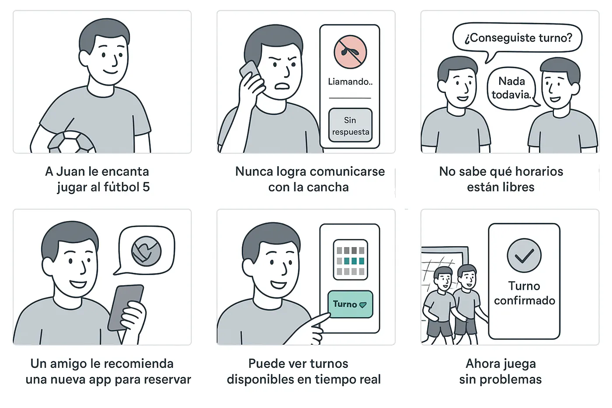
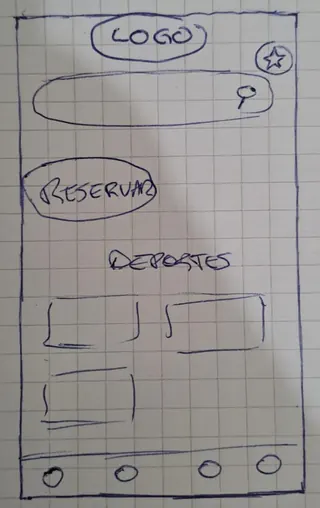
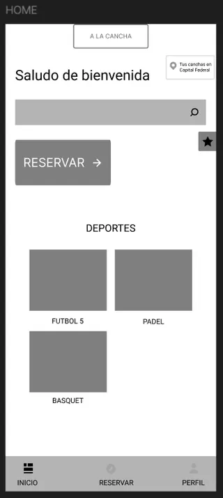
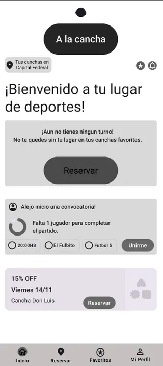
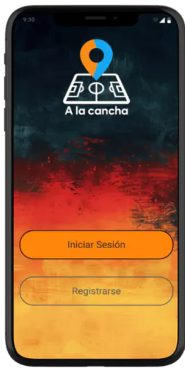

Casos de UX
UX/UI · App mobile · 2025
Caso de estudioA la Cancha: reservar sin llamar diez veces
Una app para encontrar, reservar y completar equipo en canchas de fútbol, pádel y básquet, diseñada desde las entrevistas hasta el prototipo.
- Contexto
- Proyecto de la carrera de Diseño UX/UI, Coderhouse · 2025
- Métodos
- Entrevistas, mapa de empatía, POV, storyboard, card sorting, wireframes, test de usabilidad, heurísticas
- Herramientas
- Figma, Material Design, Zoom
- Estado
- Prototipo en alta fidelidad con los cambios del test

El problema
En cinco entrevistas apareció lo mismo: las canchas casi nunca atienden el teléfono, por WhatsApp la charla para encontrar un horario se hace larga, y cuando falta un jugador el turno se cancela o se juega con uno menos.
Lo que hice
- Definí el MVP en tres funciones: buscar cancha por zona o en un mapa, reservar eligiendo fecha y horario, y postularse como jugador disponible para sumarse a un equipo incompleto. Esta última salió directo de las entrevistas.
- Organicé la navegación con un card sorting abierto de 10 participantes: hubo mucho acuerdo en agrupar los deportes y en las funciones centrales (reservar, mapa, buscador, mis reservas).
- Pasé de bocetos en papel a wireframes en baja y después a una versión con patrones de Material Design, antes de la interfaz final.
Del papel a la alta fidelidad

1 · Papel 
2 · Baja fidelidad 
3 · Patrones 
4 · Alta fidelidad
Qué mostró el test
Probé el prototipo con 5 personas por videollamada, con dos tareas: reservar una cancha de fútbol 5 y postularse como jugador disponible.
- Funcionó: la reserva sigue un camino lineal (cancha → horario → confirmar) y la mayoría la completó sin errores críticos. «Postularse» les pareció útil para encontrar partido.
- No funcionó: el botón principal competía con otros elementos y algunas personas no encontraron dónde empezar la reserva. Tampoco quedaba claro si estaban «activas» o «inactivas» como jugadoras disponibles.
Esos problemas, junto con los de la evaluación heurística, se incorporaron al prototipo final.